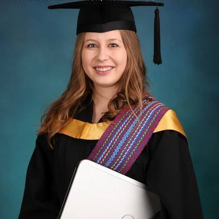

Who I am
My name is Ashley Dawn Fegan, and I am a 4th year computing science student at the U of A. I am from a farm in Red Deer County, and I am looking for a job in the Red Deer area. I have an interest in both web development and database management and would love to work in either field.
My Professional History
I worked at the Elnora Library as an IT tech in highschool from 2008-2011.
I worked at the University of Alberta in the AMMI lab as part of WISEST in the summer of 2010.
I have worked as a Moodle assisant since 2013 for NorthStar Academy.
What I have to offer
I have experience in troubleshoot and setup of hardware, including laptops, desktops, printers, and mobile devices. I have experience offer classes to educate individual on the use of technology and websites. I am able to program in Python, C, Java, PHP, SQL, Robot C, assembly, Javascript, HTML, and CSS.